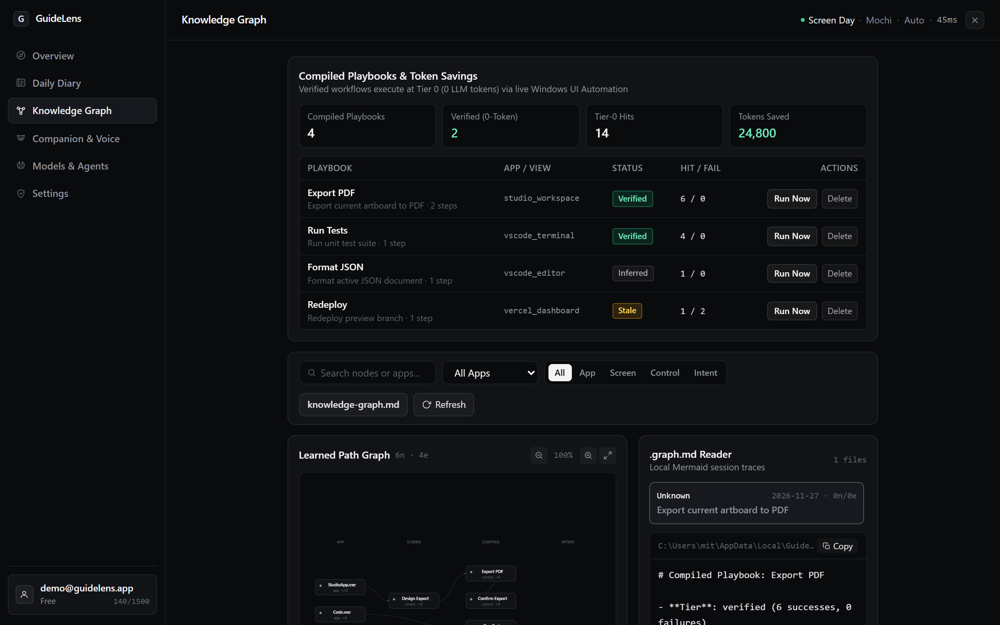
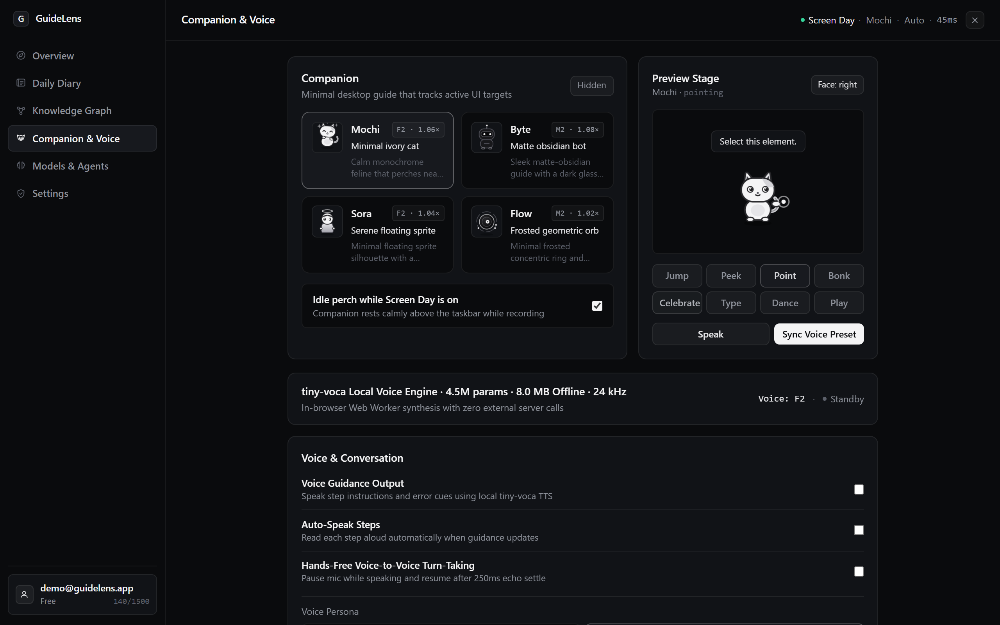
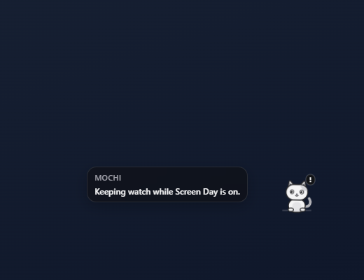
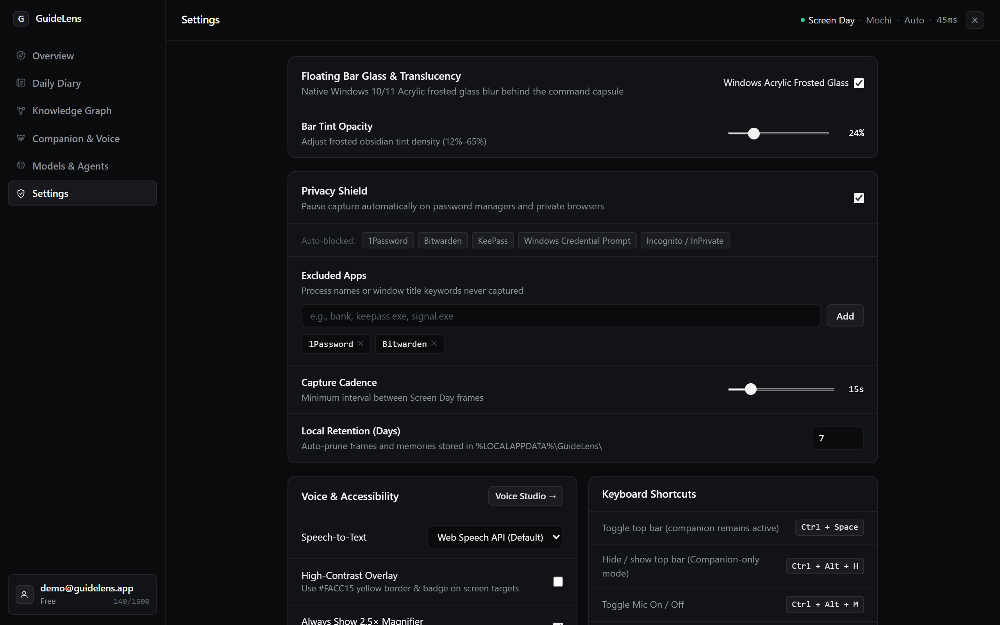
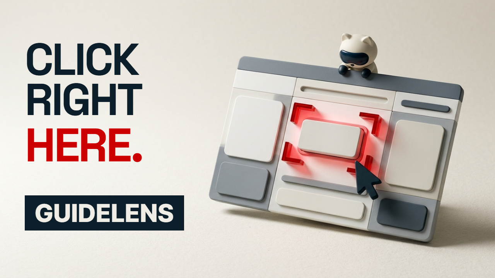

See the step right on screen
GuideLens highlights exact Windows controls with live UI automation, DWM Acrylic glass, and zero-token playbooks.
One click moves the guide forward
Scroll or pick a phase to watch the reticle lock onto controls.
Acrylic bar + 1-click Default Options.
Click the locked Export PDF button.
Replay verified paths at 0 LLM tokens.
Acrylic bar & 1-click Default Options ready
Snapped to real controls, never guessed
Raw vision models drift across scaled displays. GuideLens locks onto live Windows UI Automation.
- Vision estimate
- Unanchored 0 to 1000 coordinates miss edges.
- GuideLens hybrid
- xcap, Set of Mark, and IUIAutomation snap exact rects.
Drag across the frame to compare coordinate grounding.
Zero-token Compiled Playbooks
Verified paths compile into Tier-0 UIA playbooks and launch in one click from the Acrylic bar.
- Tier-0 Playbooks
- Verified SQLite paths replay with 0 LLM tokens and instant Re-ask AI fallback.
- 1-Click Options
- Surface top app actions as
0 tokpills inside the command bar. - Windows Acrylic
- Native DWM frosted glass with adjustable 12–65% smoked tint opacity.

Four quiet guides on your desktop
Monochrome companions perch above the taskbar and react to window focus.


Every action sits on a global key
- Command bar
- Ctrl + Space
- Companion only
- Ctrl + Alt + H
- Microphone
- Ctrl + Alt + M
- Live session
- Ctrl + Alt + L
- Screen Day
- Ctrl + Alt + D
- Local Ollama
- Ctrl + Alt + O
- Agent CLI
- Ctrl + Alt + A
- Clear box
- Esc

Swap the brain without changing tools
Run offline via Ollama, use API keys, or attach agent CLIs.
| Mode | Backend | Connection |
|---|---|---|
local_vlm |
Ollama | 127.0.0.1:11434 (qwen2.5vl:3b default). |
byo_api |
BYO key | Gemini, OpenAI, Anthropic, Groq, OpenRouter. |
agent_cli |
Agent CLI | claude, codex, gemini, agy, hermes. |
groq_pro |
Cloud Pro | FastAPI proxy over Groq Vision. |
agent_mcp |
MCP bridge | Capture and overlay on 127.0.0.1:47615. |
Built for Windows desktops
Windows 10 or 11 x64 with WebView2.
Windows x64
Standalone binary with optional Ollama vision.
Privacy shield
Skips password managers, private tabs, UAC.
Fifteen app profiles
Photoshop, Excel, PowerPoint, Docs, Word, Canva, Premiere, After Effects, VS Code, GitHub, Terminal, OpenCode, Antigravity, Settings, Chrome.
Ready for Windows 10 and 11
Run the standalone installer or clone the repository.
- 55.2 MB installer
- Portable ZIP (22.0 MB)
- SHA-256
Unsigned release: choose More info then Run anyway in SmartScreen.
git clone https://github.com/joking-really/GuideLens.git
